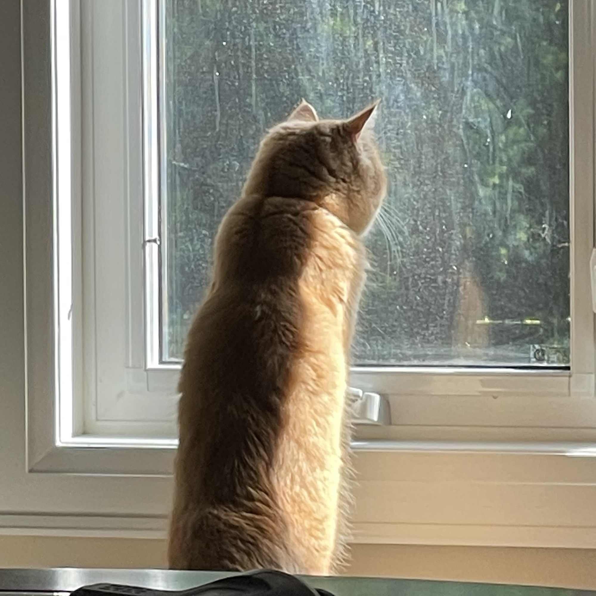
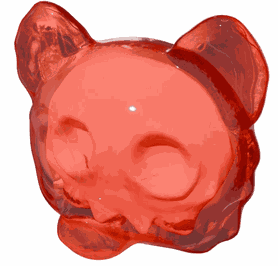
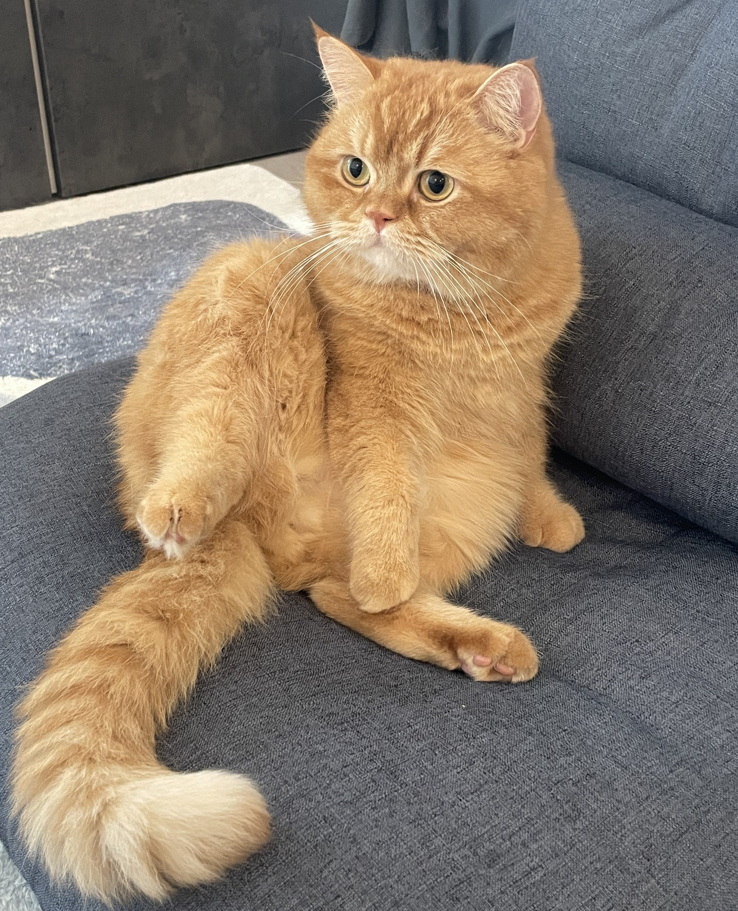

|  |
I am a 4th year Computer Science PhD student at the University of Toronto, advised by Eitan Grinspun. |
|  |
Mengfei Liu*,
Yue Chang*,
Zhecheng Wang,
Peter Yichen Chen,
Eitan Grinspun
* Equal contribution SIGGRAPH Asia 2025
A neural field approach that captures sharp spatial derivative changes without remeshing, enabling flexible simulation of evolving creases, material transitions, and complex shape behaviors.
|
|
Yue Chang,
Mengfei Liu,
Zhecheng Wang,
Peter Yichen Chen,
Eitan Grinspun
SIGGRAPH 2025 [Best Paper Award Honorable Mention]
Wind Lifter is a neural method for real-time simulation of cuts in deformable structures, modeling discontinuities explicitly for better generalization and control.
|
|
|
Michael Cormier,
Robin Cohen,
Richard Mann,
Karyn Moffatt,
Daniel Vogel,
Mengfei Liu,
Shangshang Zheng
ACM Transactions on the Web, Volume 18, Issue 3, 2024
Segmenting and classifying web pages as images to support users with cognitive or visual impairments.
|
|  |
Chilling with my cat
He is a very good boy and shares the same birthday (not the same year) with Leonhard Euler. |